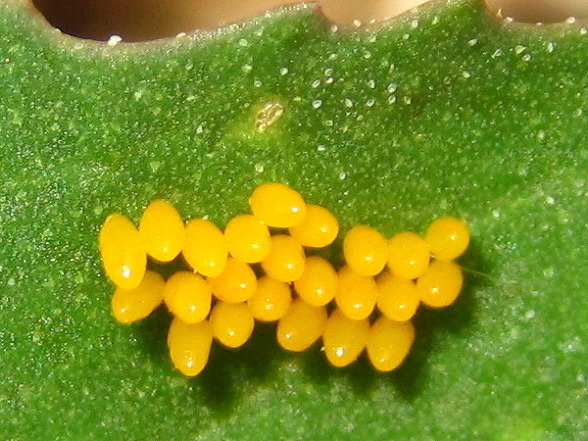
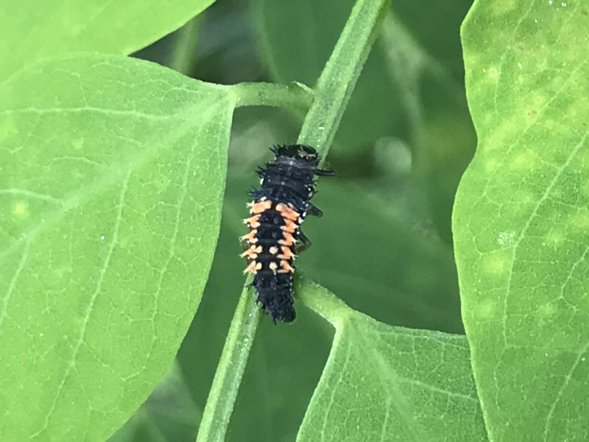
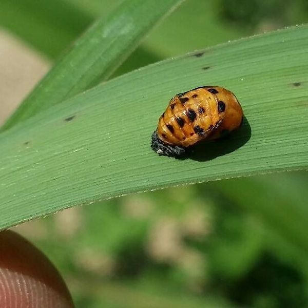
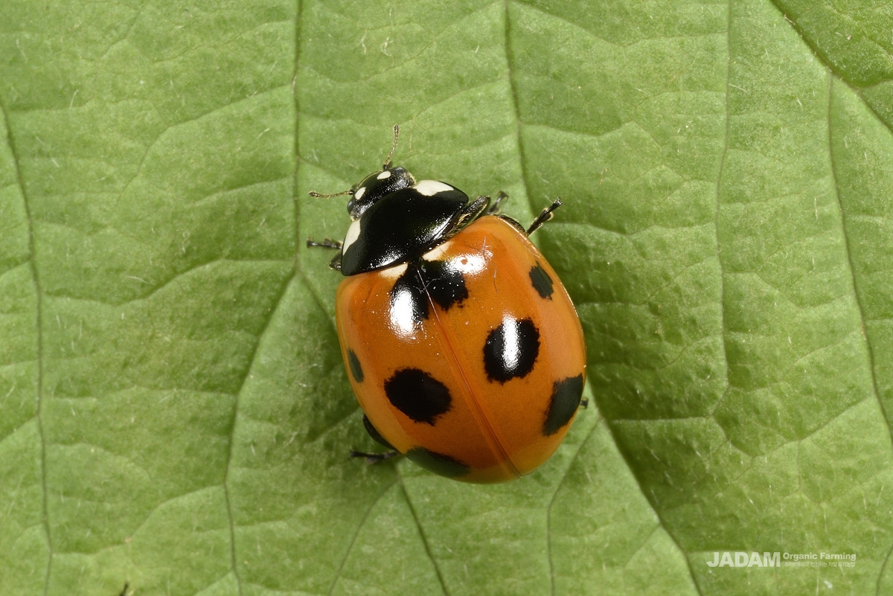

1

그림을 넣어주세요
1단계 알
나뭇잎 뒷면에 노란색 알들이 옥수수 알갱이처럼 모여 있어요.

나뭇잎 뒷면에 노란색 알들이 옥수수 알갱이처럼 모여 있어요.

길쭉하고 검은색 몸에 주황색 점이 콕콕 박혀 있어, 얼핏 보면 무당벌레인 줄 모를 정도로 다르게 생겼어요.

잎사귀에 꼬리를 딱 붙이고 몸을 웅크린 채 움직이지 않고 변신을 준비해요.

우리가 잘 아는 빨갛고 진한 점무늬를 가진 동글동글한 무당벌레가 돼요.
아이들을 위한 팁
진딧물을 잡아먹는 고마운 곤충으로, 주변 화단이나 풀밭에서 흔히 볼 수 있어요. 애벌레 때의 모습은 성충과 완전히 달라서 깜짝 놀랄 거예요!